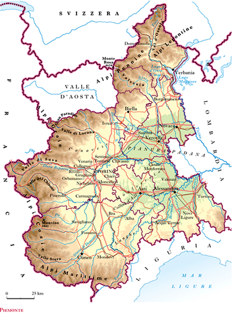

The data from which this analysis comes to life were taken from the official website of the Piedmont Region and concern various aspects of Piedmontese tourism. It is a table in CSV format with 10 columns describing different aspects of regional tourism. Of these 10 variables, only 5 were used in this analysis, namely: the year, he number of arrivals by Italian tourists, the number of arrivals by foreign tourists, the total number of arrivals and the province to which the data belongs. This simple analysis aims to give an overview of the tourism numbers in the region: what is the trend of these 17 years analyzed, how it is divided between Italians and foreigners and how it is divided by region.
In the first graphic on the left we can see the number of arrivals per year relatives to italian tourists, whereas on the second graphic on the right we see the same data but this time computed on foreign travellers. The general trend is, for the most part, similar: arrivals grow, especially in the last three years before the pandemic, then they more than halve in 2020 and timidly grow back a little in 2021. Nevertheless there is one major difference: in the years of the subprime crisis (2008 - 2010) while there were less strangers coming to Piedmont for their holidays there was a spike of italian arrivals.
In this third visualization it is possible to see how the general trend (Italians and foreigners added together) has always been growing from 2005 to 2019. Consequently, it can be noted that during the years of the subprime crisis, despite the collapse of foreign arrivals, the increase in Italian arrivals more than compensated, allowing the sector to continue to grow. Finally is also very clear from this bar chart that, with the pandemic, Piedmont's turists arrivals more than halved: from more than 5 milion to less than 2.5 milion arrivals, and, even with a grow in 2021, they remain below what they were in 2005.
The comparison between regions allows us to have an overall view of where tourists flows within Piedmont were concentrated during the 17 years analyzed. Almost half of the arrivals took place in the Turin region, which, in addition to being one of the largest, is home to the biggest Piedomontese city (as well as the provincial capital), and has numerous famous Alpine resorts on its territory. In the second place we find the Verbano-Cusio-Ossola region, with hilly and mountainous territory it attracts many tourists both on the alps and on the shores of the two lakes it shares with the Novara region: Lake Orta and Lake Maggiore. After that we find Cuneo which shares the lands of wine with Asti and finally the last five regions (Novara, Alessandria, Asti, Vercelli and Biella) occupy, all added up, less than a quarter of the total share of Piedmontese tourism.